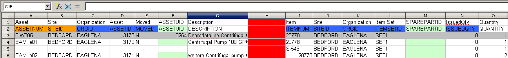
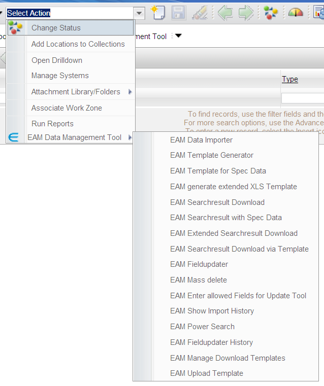
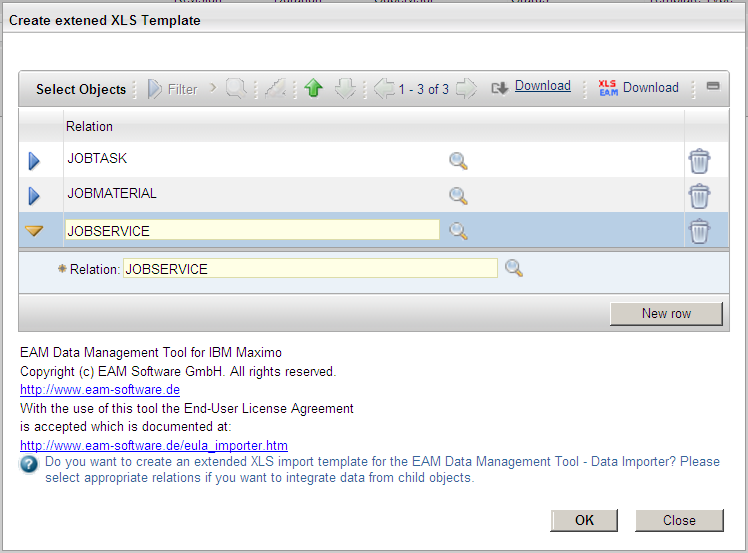

Extended Import
The Extended Import or 1:n Import allows you to:
- Insert new Maximo objects together with related child objects like ASSETS with SPAREPARTS or JOBPLAN with JOBTASK or PO with POLINE objects
- Add or update child object data for existing parent objects
In Maximo (or rather in the Tivoli Process Automation Engine) you can define relationships between Maximo objects. Not all relations can be used with the importer. To import new child objects with the extended import only "real dependent" objects can be created. "Real dependent" objects are those which always require a higher level object to be meaningful (e.g. a POLINE makes only sense with a related PO object).
Create an Excel import file
The Extended Import is also, like the Specification Import, an extension to the Simple Import mode of the EAM Importer and shares some key concepts with the Simple Import mode. However, the following conditions apply for the Excel File contents:
- Only 1:n relations are allowed. Relations like 1:n:m like INVOICE INVOICELINE INVOICECOST are not supported.
- A XLS Import file for the Extended Import can contain more than one worksheets with data.
- A worksheet in the Excel file contains the data for one relation from the parent object to the child object.
- The name of the worksheet for the Extended Import starts with "Extended_" and is followed by the relation name. Worksheet names in XLS are limited to 31 characters. For long relationship names the template generator and search result download will only use the first 31 characters of the resulting worksheet name.
- After the last column of the main/parent object attributes a separation column is inserted. The template generator and search result download with extended data insert the separation column with a red background.
- The second row of the separator column contains the name of the relation surrounded with "!", e.g. !SPAREPART!.
- On the right hand side of the separation column are the attributes of the child object. Required fields, unique ID Column, key column,... have a background color according to the colorlegende (see Simple Import above for a description)
- For one record of th e main/parent object (left of the separator column) there are 0...n entries on the related object side (right of the separator column). The first child record is always on the same row as the main object data.
- The import is processed row by row and the obj ect is saved every time a "new" main object is encountered.
Writing a XLS import file for the extended import from scratch is a time consuming
and error-prone task and should be avoided. It is recommended to start with a
generated template or a downloaded search result with extended data or to start with
a demo XLS file.
The following screenshot shows a simple worksheet for the extended import. The first
ASSET EAM_e01 has two SPAREPART children. The basic layout is the same as for the
simple import (row 1 : attribute title, row 2: attribute name, row 3: sample data row,
row 4: first data row to import. See the format description above)

Illustration 27: Worksheet for extended import with child object
Download a Template for the extended import
To download an empty XLS template for the extended import select the action menu item "EAM Data Management Tool" → "EAM generate extended XLS Template" in the list view of an application.

Illustration 28: Select Action menu entry EAM generate extended XLS template
This command opens a dialog box where you can select the relation to the child object. For every selected relation a separate worksheet is created in the XLS template file.

Illustation 29: Dialog: create extended XLS Template
The lookup lets you select the available and allowed relations for the main object of the current application.
NOTICE:
The administrator can and should limit the available relations in this lookup to those
which are needed and are useful for the application! This task can be accomplished
with the "EAM Enter allowed Fields for the Update Tool". See chapter "EAM
Fieldupdater - Select allowed relations and attributes" for detailed
instructions.
After selecting the relations click OK. The generated template is sent to the client and
the user is prompted to save or open the XLS file (this may vary on your client and
depends on the client configuration).
Lets assume you have selected the Relation SPAREPART in the above dialog in the ASSET application. The generated XLS template would then contain three worksheets:
- "Extended_SPAREPART" is the worksheets for the extended import
- "DataDictionary" contains the Data dictionary for the main object
- "Colorlegende" contains a description of the used colors in the worksheets and their meaning. (See the simple import above for a detailed description)
Download a search result with extended data
If you want to add or update related child data to existing parent objects it is very
useful to download the existing data as a XLS file suitable for the extended import.
Follow these steps to download a search result with extended data:
- Use the Filter or the advanced search to limit the objects in the list view to those parent objects you want to include in the XLS file
- Select "EAM XLS Extended searchresult download" from the action menu
- The dialog "Create XLS Download inclusive Child Data Sets 1:n" opens

- In the Dialog select the relation(s) to the child data which shall be included in the extended search result download. For every selected relation a separate worksheet is created in the XLS file.
- Optional: Check the checkbox if you want to save the attributes of the main object in every row. This is only useful if you want to process the result outside of maximo or you want to make some pivot tables. Usually you do NOT want to check this checkbox!
- Click OK. The generated search result with the selected child object data is sent to the client.
Every worksheet in the downloaded search result contains all records from the search
result and the corresponding child record s which are fetched through the specified
relation.
Before you can use the template be sure to:
- Remove any columns you do not want to set during the import on the parent object side as well as on the child object side
- Keep the unique ID columns in the template (these attributes have a light green background). For new data leave the unique ID fields empty because the importer then will insert the unique ID values for the newly created Maximo parent and child objects in the corresponding columns.
Execute the Import
CLS File Upload
The import or update of specification data is started from the action menu in the list view of the application. Select "EAM Data Importer" from the action menu in the list view of the application. See Illustration 15: Select Action menu Item EAM Data Importer for a screenshot.
Processing Steps for the Extended Import
The Excel file will be analyzed. The following checks are performed:
- Is the uploaded file a Excel document
- Are there any worksheets were the name starts with "Extended_"
- Are there attribute names in the second row of the worksheets
- Are the attribute names on the worksheet for the parent object and for the child object unique
- Are data rows in the worksheet available
- Is there a separation column between the attributes of the parent object and the child object
- Is the relation name parsed from the worksheet name valid
- Is there a valid child object for the given relation
In case of an error a error message is displayed to the user and the import of this worksheet is canceled.
- Analyzing the target object (the current application object; the parent object)
- Check if the target object is valid. The name is automatically determined based on the Maximo application from where the import is started.
- Determine the object type. Is it a System Object (e.g. PERSON), SITE Object (e.g. LOCATION, ASSET,...) or a ORG Object (e.g.. LABOR, CRAFT,...).
- Determine the unique ID attribute name. This is unique for every object and assigned internally from Maximo. For example ASSETUID for Asset Objects or LABORID for Labor objects.
- Determine the key attribute(s) of the object.
- Check if all required attributes are available in the Excel document.
In case of an error a error message is displayed to the user and the import is canceled.
- Analyzing the child object:
- Check if child object is valid.
- Determine the child object type. Is it a System Object (e.g. PERSON), SITE Object (e.g. LOCATION, ASSET,...) or a ORG Object (e.g.. LABOR, CRAFT,...).
- Determine the unique ID attribute name of the child object. This is unique for every object and assigned internally from Maximo. For example ASSETUID for Asset Objects or LABORID for Labor objects.
- Determine the key attribute(s) of the child object.
- For every parent object row (remember: starting from row four in the Excel file) do the following:
- Based on the information (available attributes in the excel document, known properties of the object type like key attributes, unique attributes, object type and the available data in Maximo) decide if we update existing parent object data or insert a new parent object.
- $Delete column available and contains 1 (or Y or something which evaluates to True for a Maximo YORN field) Do not create the object or delete it if it is already available.
- Prior to creating a new parent object the default insert SiteID, default insert Org ID, default ItemSet and default CompSet are set on the MBO Set (depending on the object type)
- For a new parent object the key attributes are set first.
- Set other attributes of the parent object in the same order as they appear in the Excel document.
- Retrieve the child set via the given relation. First the relation name derived from the worksheet name is used. If no valid relation can be found (the worksheet name might be incomplete because only 31 characters are allowed for XLS worksheet names) then the relation name from the separator column is used. If the parent object is a new object and we already have child data available, then we stop the import with an error message because the relation is not a "real" 1:n relation.
- Determine the number of child obje cts for the current parent object in the XLS file
- For every child object in the XLS file do the following:
- Search for the child object in the child dataset (with unique ID, with key columns of the child object, with key columns from the child and values borrowed from the parent).
- Check if there is a $Delete column for the child object and if the column contains a Maximo YORN true value (1 or Y). If so then do not create the child object or delete it if it is already there.
- If a child record is found, then upd ate the attributes of this child object
- If no child record is found, then add a new child record to the child set and set the given child attribute values.
- Save the parent object set
If there is an error (either during setting of attributes or during saving) the behavior depends on the processing mode. If no column $IMPORTERROR is available in your worksheet (processing mode "Stop on Error") an error message is displayed to the user and the import is aborted. Every error message during import contains the line number of the Excel file and the attribute name which causes the problem. If a column $IMPORTERROR is available (processing mode "Continue on Error") the error message is not displayed to the user but written to the $IMPORTERROR column of the corresponding row. Also, the problematic attribute is highlighted with a red background and the import is not aborted but continues with the next row.
NOTICE:
- As against the Simple Import no columns can be added to the XLS worksheets for the extended import on the parent data (the XLS handling library does not allow to insert columns in the middle of the worksheet in front of the separation column)
- If an attribute in the Excel document in the left of the separation column is empty (no value in the Excel cell) then t he attribute is set to NULL. It is therefore important to remove all columns from the excel document which should or can not set to null or fill all columns with the appropriate values
- Object attributes are only set if the new value from the Excel document is different from the current value in the MBO!
- The unique ID column for the child data is added to the worksheet, if it is not already available. For new child objects the unique ID of this object is saved in the XLS file.
- If the unique ID columns are available on the parent object, then they are filled with the generated unique ID for the object.
After the Import
The steps after processing of the uploaded XLS file (display import summary dialog, download of the processed XLS file to the client, update list view of the application) are identical to the Simple Import and are not repeated here.
Multilevel Import
The Multilevel import is a extension to the extended import. The extended import as
described above can import 1:n Relations. With multilevel imp ort this concept is now
extended to more than 2 levels
For the majority of data in Maximo the Extended Import is sufficient. However, there
are some Maximo applications where simple parent child relations are not enough
and 1:n:m is required. These are:
- Security Groups - applications - options
- Problem - cause - remedy
Multilevel searchresult download and multilevel template generation are not supported. You have to manually create the excel importfiles for multilevel import. The layout of the multilevel import file is similar to the extended import with some additional requirements. The following chapters explain the content and layout of the importfile with an example.
Security Groups - Applications - Options
Multilevel import allows the activation and deactivation of sigoptions in applications for specific security groups. The importfile has 3 levels:
- Security Group (MAXGROUP)
- Application (MAXAPPS)
- Options (SIGOPTION)
A screenshot of the excel import file is shown in Illustration 30: Multilevel Import File
for Security Groups Applications Options. The content of the import file
is similar to the extended import.
When creating a import file for the multilevel import make sure that:
- the different levels are separated with a separation column
- the first row in the separation column contains the names of the two objects separated with a dot. In the example below the first separation column contains MAXGROUP.MAXAPPS. This means that right of the separation column (the child side) where is a MAXAPPS entry and the higher level object is MAXGROUP.
- The second row in the separ ation column contains the relation name for the two objects in row 1. The sample below uses the relationship MAXAPPS between the objects MAXGROUP and MAXAPPS and the relationship SIGOOTHER between MAXAPPS and SIGOPTION.

The above import file enables the some of the SIGOPTIONS for the EAM Data Management Tool in the Action application for the security group MAXADMIN.
Failure Class - Problem - Cause - Remedy
Another practical example for a multilevel import is the Maximo application Failure Codes. In this application we have four Levels, which are imported during a single import. The hierarchical structure is as follows:
- one failure class can contain any number of problems
- one problem can have any number of causes
- one cause can have any number of remedies
You can download a sample import file for problem cause remedy from the EAM Software sample library.